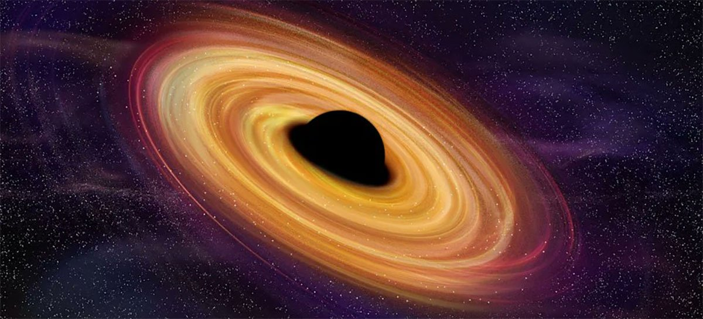

Post #1
Buraco negro é uma região do espaço-tempo em que o campo gravitacional é tão intenso que nada — nenhuma partícula ou radiação eletromagnética como a luz — pode escapar. A teoria da relatividade geral prevê que uma massa suficientemente compacta pode deformar o espaço-tempo para formar um buraco negro. .